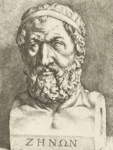

Por volta do século V a.c, Zenão de Eleia elucidou diversos paradoxos,
consoante a visão racionalista radical pré-socrática (visão que
defendia a subjetividade extrema de conceitos "comuns" na sociedade.
Para esses filosófos o movimento, o tempo e o espaço não existiam),
dentre eles o de Aquiles e a tartaruga, da flecha e da dicotomia.
Daremos destaque ao primeiro. Nesse paradoxo ele dissertava sobre uma
corrida em que uma tartaruga saía alguns centímetros à frente do
grande corredor Aquiles, e a partir disso ele elucidava que seria
impossível Aquiles chegar na tartaruga, pois quando Aquiles se movesse
um pouco a tartaruga ainda iria se mover um pouco, de modo que a
distância entre eles fosse de centímetros, milímetros, nanômetros,
etc, mas ele nunca chegaria.
Após Zenão, veio Aristotéles que definiu infinito atual e infinito
potencial. O infinito potencial é aquele que o número de termos cresce
indefinidamente sem atingir a um ponto, pode-se relacionar a ideia de
limite. Já o infinito atual e aquele em que há uma totalidade infinita
acabada (convergente), podendo-nos referir a séries.

Consolidação do sistema decimal...
Desenvolvimento do cálculo...
Desenvolvimento das séries com Taylor e Fourier...
Formalização e aplicações modernas...